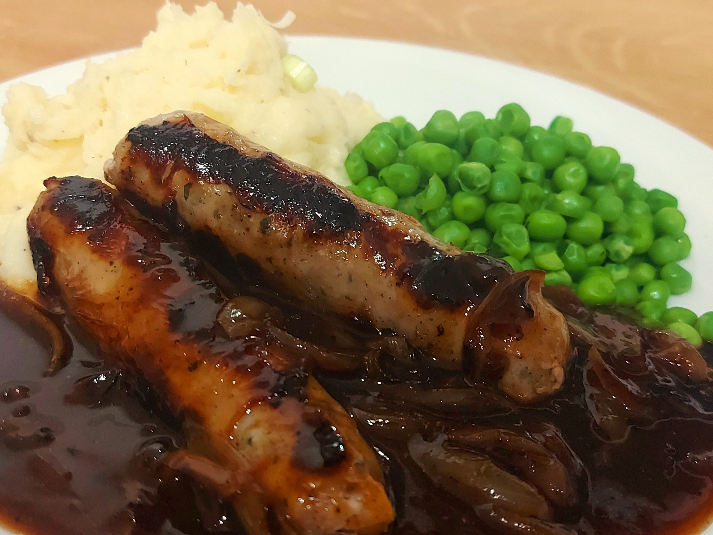

Sausage and Mash

Sausages and mash made using this recipe.
Description
Here is my recipe for sausage and mash (or bangers and mash). This is the
perfect comfort food. (1 Serving)
Nutritional Information
(All values estimated, per serving)
- Protein: 28g
- Carbohydrates: 59g
- Fat: 12g
- Total Calories: 827kcal
Ingredients
- Sausages - 2
- Medium Baking Potato - 1
- Grated Cheddar - 40g
- Milk - 30ml
- Butter - 16g
- Garlic Granules - 1/2 tsp
- Spring Onion - 1
- Peas - 80g
- Onion - 1 small
- Gravy Granules - 2 tbsp
- Salt - to taste
- Pepper - to taste
Method
- Put the sausages in the oven.
- Peel and dice the potatoes and boil in a saucepan.
- Drain the potatoes when they fall off fork.
- Mash the potatoes.
- Add butter and garlic granules to the potatoes while mashing.
- Add the cheese to the potatoes and mix in. They may need to be
put on very low heat to melt the cheese.
- Pour in a dash of milk and whip the potatoes until fluffy.
- Finely slice the spring onion and stir into the mashed potatoes.
- Season with salt and pepper to taste.
- Boil peas.
- Fry onions until brown and slightly caramelised.
- Add gravy granules and water to the onions and stir until thick.
- Drain the peas, serve and enjoy!
Back